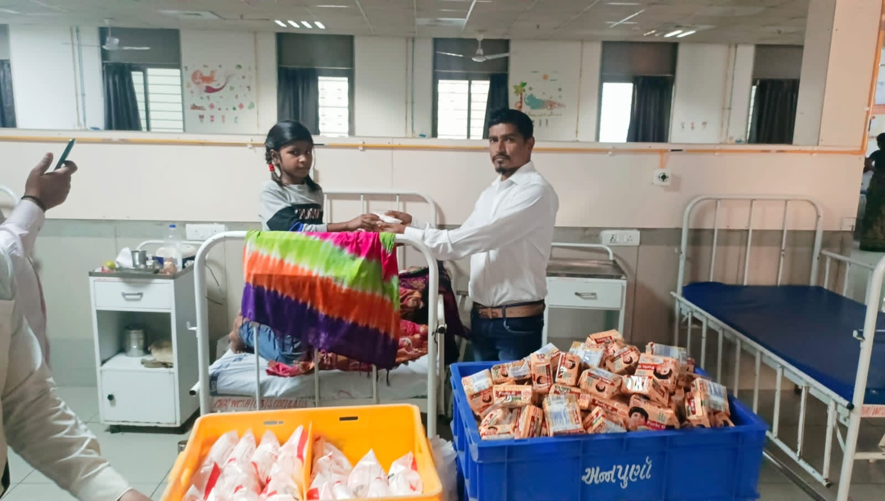
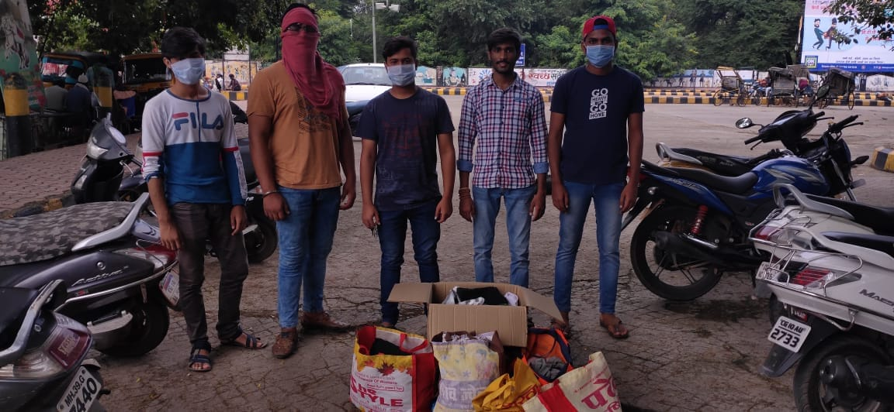

COMMUNITY SUPPORT
Project Seva
Serving communities with compassion, dignity and meaningful support.




Project Seva focuses on providing essential support to underprivileged communities through food and clothing assistance.
The initiative reflects InAmigos Foundation's commitment to supporting people facing basic needs and creating a culture of compassion, dignity and community participation.
Through meaningful acts of service, Project Seva brings volunteers and communities together to help make everyday life a little more secure for those who need support.
THE PURPOSE
Support that reaches where it matters.
Project Seva works around the basic needs of communities, with a focus on food and clothing support.
The initiative encourages people to come together and contribute towards creating a more caring and supportive society.
Meals and clothing distributed through the initiative.
A small act of support can become meaningful change when a community comes together.
BE PART OF THE CHANGE